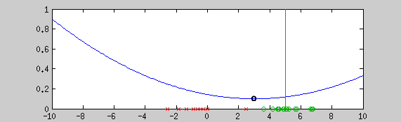

This example shows the estimation of the mean with the graduate non convexity approach using a newton optimization at each step for locally minimizing the energy. Green points are a realization of a normal distribution (vertical line shows the mean), red crosses are outliers. The blue line is the normalized cost function. The algorithm starts from a convex estimator (the normal distribution in this case). Step by step, a more robust estimator is taken. The black point shows the current estimate of the mean.
Introduction
Many problems have a non convex energy formulation. Therefore, reaching the global minimal in a finite time is not guaranteed. Non convex functions are often used for robust estimation to estimate variable under non-Gaussian noise. The graduated non convexity approach provides a generic method for reaching an interesting minima when robust estimators are needed.
Generic approach for robust linear fitting
For many problems, we are looking for model parameters \(\phi\) of a probability function which maximize the given function from paired training examples \(y_i\) and \(x_i\) :
\[ {\underset{\mathrm{\phi}}{\text{argmax}}}\;[ Pr(y_i | x_i,\phi) ] \]
Where the variable \(y_i\) is linearly related to \(x_i\) by \(\phi\) as following :
\[ y_i = \phi x_i + \epsilon \]
\(\epsilon\) is the perturbation related to the noise distribution. When the noise is supposed gaussian, the normal distribution is chosen and this leads to the well known least square problem when the negative-log of the pdf is taken. This formulation is very sensitive to outliers because of the Gaussian noise assumption. To tackle this problem, one will choose a robust estimator instead of the normal distribution.
Graduated non convexity approach
The cost function of a robust estimator is often not convex, consequently, global minima cannot be computed in a finite time. To reach an interesting local minima, this problem can be optimized with the graduate-non-convexity approach. The idea of this algorithm is to start from a convex estimator (the normal distribution for example) and change the sharp of the cost function until it reaches an estimator robust enough to fit as good as possible the targeted distribution.
Example : Robust polynomial and conic coefficient estimation
Here are examples of polynomial coefficient estimation by "graduated non convexity" approach. Blue lines are iterated steps, green line is the ground truth. Data are coloured with the derivative cost of the current estimator. Red : the derivative is close to one; blue : tends to 0. Red points are constraints added with a Lagrangian multiplier.
The conic equation can be written as an explicit least square form, and thus, can also be optimized with the GNC approach :